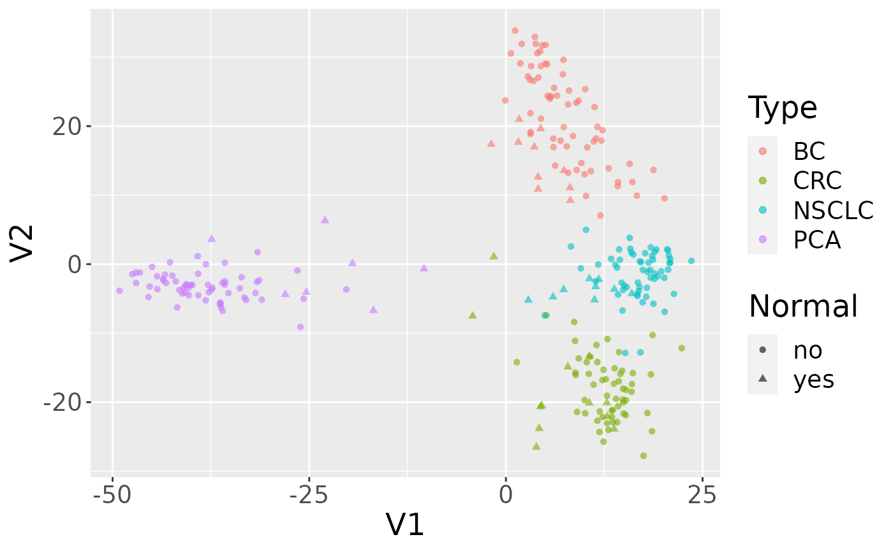

PublicDataResources.RmdPublic data resources and Bioconductor
Installation
If you are using the Docker container provided with this workshop, everything (including the workshop) is already installed. Otherwise, you will need to install the following packages.
GEOquery
(Davis and Meltzer 2007)
The NCBI Gene Expression Omnibus (GEO) serves as a public repository for a wide range of high-throughput experimental data. These data include single and dual channel microarray-based experiments measuring mRNA, genomic DNA, and protein abundance, as well as non-array techniques such as serial analysis of gene expression (SAGE), mass spectrometry proteomic data, and high-throughput sequencing data. The GEOquery package (Davis and Meltzer 2007) forms a bridge between this public repository and the analysis capabilities in Bioconductor.
Overview of GEO
At the most basic level of organization of GEO, there are four basic entity types. The first three (Sample, Platform, and Series) are supplied by users; the fourth, the dataset, is compiled and curated by GEO staff from the user-submitted data. See the GEO home page for more information.
Platforms
A Platform record describes the list of elements on the array (e.g., cDNAs, oligonucleotide probesets, ORFs, antibodies) or the list of elements that may be detected and quantified in that experiment (e.g., SAGE tags, peptides). Each Platform record is assigned a unique and stable GEO accession number (GPLxxx). A Platform may reference many Samples that have been submitted by multiple submitters.
Samples
A Sample record describes the conditions under which an individual Sample was handled, the manipulations it underwent, and the abundance measurement of each element derived from it. Each Sample record is assigned a unique and stable GEO accession number (GSMxxx). A Sample entity must reference only one Platform and may be included in multiple Series.
Series
A Series record defines a set of related Samples considered to be part of a group, how the Samples are related, and if and how they are ordered. A Series provides a focal point and description of the experiment as a whole. Series records may also contain tables describing extracted data, summary conclusions, or analyses. Each Series record is assigned a unique and stable GEO accession number (GSExxx). Series records are available in a couple of formats which are handled by GEOquery independently. The smaller and new GSEMatrix files are quite fast to parse; a simple flag is used by GEOquery to choose to use GSEMatrix files (see below).
Getting Started using GEOquery
Getting data from GEO is really quite easy. There is only one command that is needed, getGEO. This one function interprets its input to determine how to get the data from GEO and then parse the data into useful R data structures.
library(GEOquery)
With the library loaded, we are free to access any GEO accession.
Use case: MDS plot of cancer data
The data we are going to access are from this paper.
Background: The tumor microenvironment is an important factor in cancer immunotherapy response. To further understand how a tumor affects the local immune system, we analyzed immune gene expression differences between matching normal and tumor tissue.Methods: We analyzed public and new gene expression data from solid cancers and isolated immune cell populations. We also determined the correlation between CD8, FoxP3 IHC, and our gene signatures.Results: We observed that regulatory T cells (Tregs) were one of the main drivers of immune gene expression differences between normal and tumor tissue. A tumor-specific CD8 signature was slightly lower in tumor tissue compared with normal of most (12 of 16) cancers, whereas a Treg signature was higher in tumor tissue of all cancers except liver. Clustering by Treg signature found two groups in colorectal cancer datasets. The high Treg cluster had more samples that were consensus molecular subtype 1/4, right-sided, and microsatellite-instable, compared with the low Treg cluster. Finally, we found that the correlation between signature and IHC was low in our small dataset, but samples in the high Treg cluster had significantly more CD8+ and FoxP3+ cells compared with the low Treg cluster.Conclusions: Treg gene expression is highly indicative of the overall tumor immune environment.Impact: In comparison with the consensus molecular subtype and microsatellite status, the Treg signature identifies more colorectal tumors with high immune activation that may benefit from cancer immunotherapy.
In this little exercise, we will:
- Access public omics data using the GEOquery package
- Convert the public omics data to a
SummarizedExperimentobject. - Perform a simple unsupervised analysis to visualize these public data.
Use the GEOquery package to fetch data about GSE103512.
gse = getGEO("GSE103512")[[1]]
## Warning: 102 parsing failures.
## row col expected actual file
## 54614 SPOT_ID 1/0/T/F/TRUE/FALSE --Control literal data
## 54615 SPOT_ID 1/0/T/F/TRUE/FALSE --Control literal data
## 54616 SPOT_ID 1/0/T/F/TRUE/FALSE --Control literal data
## 54617 SPOT_ID 1/0/T/F/TRUE/FALSE --Control literal data
## 54618 SPOT_ID 1/0/T/F/TRUE/FALSE --Control literal data
## ..... ....... .................. ......... ............
## See problems(...) for more details.Note that getGEO, when used to retrieve GSE records, returns a list. The members of the list each represent one GEO Platform, since each GSE record can contain multiple related datasets (eg., gene expression and DNA methylation). In this case, the list is of length one, but it is still necessary to grab the first elment.
The first step–a detail–is to convert from the older Bioconductor data structure (GEOquery was written in 2007), the ExpressionSet, to the newer SummarizedExperiment. One line suffices.
library(SummarizedExperiment) se = as(gse, "SummarizedExperiment")
Examine two variables of interest, cancer type and tumor/normal status.
## normal.ch1
## cancer.type.ch1 no yes
## BC 65 10
## CRC 57 12
## NSCLC 60 9
## PCA 60 7Filter gene expression by variance to find most informative genes.
Perform multidimensional scaling and prepare for plotting. We will be using ggplot2, so we need to make a data.frame before plotting.
mdsvals = cmdscale(dist(t(dat))) mdsvals = as.data.frame(mdsvals) mdsvals$Type=factor(colData(se)[,'cancer.type.ch1']) mdsvals$Normal = factor(colData(se)[,'normal.ch1']) head(mdsvals)
## V1 V2 Type Normal
## GSM2772660 8.531331 18.57115 BC no
## GSM2772661 8.991591 13.63764 BC no
## GSM2772662 10.788973 13.48403 BC no
## GSM2772663 3.127105 19.13529 BC no
## GSM2772664 13.056599 13.88711 BC no
## GSM2772665 7.903717 13.24731 BC noAnd do the plot.
library(ggplot2) ggplot(mdsvals, aes(x=V1,y=V2,shape=Normal,color=Type)) + geom_point( alpha=0.6) + theme(text=element_text(size = 18))

Accessing Raw Data from GEO
NCBI GEO accepts (but has not always required) raw data such as .CEL files, .CDF files, images, etc. It is also not uncommon for some RNA-seq or other sequencing datasets to supply only raw data (with accompanying sample information, of course), necessitating Sometimes, it is useful to get quick access to such data. A single function, getGEOSuppFiles, can take as an argument a GEO accession and will download all the raw data associate with that accession. By default, the function will create a directory in the current working directory to store the raw data for the chosen GEO accession.
GenomicDataCommons
From the Genomic Data Commons (GDC) website:
The National Cancer Institute’s (NCI’s) Genomic Data Commons (GDC) is a data sharing platform that promotes precision medicine in oncology. It is not just a database or a tool; it is an expandable knowledge network supporting the import and standardization of genomic and clinical data from cancer research programs. The GDC contains NCI-generated data from some of the largest and most comprehensive cancer genomic datasets, including The Cancer Genome Atlas (TCGA) and Therapeutically Applicable Research to Generate Effective Therapies (TARGET). For the first time, these datasets have been harmonized using a common set of bioinformatics pipelines, so that the data can be directly compared. As a growing knowledge system for cancer, the GDC also enables researchers to submit data, and harmonizes these data for import into the GDC. As more researchers add clinical and genomic data to the GDC, it will become an even more powerful tool for making discoveries about the molecular basis of cancer that may lead to better care for patients.
The data model for the GDC is complex, but it worth a quick overview and a graphical representation is included here.

The data model is encoded as a so-called property graph. Nodes represent entities such as Projects, Cases, Diagnoses, Files (various kinds), and Annotations. The relationships between these entities are maintained as edges. Both nodes and edges may have Properties that supply instance details.
The GDC API exposes these nodes and edges in a somewhat simplified set of RESTful endpoints.
Quickstart
This quickstart section is just meant to show basic functionality. More details of functionality are included further on in this vignette and in function-specific help.
To report bugs or problems, either submit a new issue or submit a bug.report(package='GenomicDataCommons') from within R (which will redirect you to the new issue on GitHub).
library(GenomicDataCommons)
Check connectivity and status
The GenomicDataCommons package relies on having network connectivity. In addition, the NCI GDC API must also be operational and not under maintenance. Checking status can be used to check this connectivity and functionality.
GenomicDataCommons::status()
## $commit
## [1] "0137629ad19be1839669a25a741a165f90c7276c"
##
## $data_release
## [1] "Data Release 25.0 - July 22, 2020"
##
## $status
## [1] "OK"
##
## $tag
## [1] "2.3.1"
##
## $version
## [1] 1Find data
The following code builds a manifest that can be used to guide the download of raw data. Here, filtering finds gene expression files quantified as raw counts using HTSeq from ovarian cancer patients.
Download data
After the 379 gene expression files specified in the query above. Using multiple processes to do the download very significantly speeds up the transfer in many cases. On a standard 1Gb connection, the following completes in about 30 seconds. The first time the data are downloaded, R will ask to create a cache directory (see ?gdc_cache for details of setting and interacting with the cache). Resulting downloaded files will be stored in the cache directory. Future access to the same files will be directly from the cache, alleviating multiple downloads.
fnames = lapply(ge_manifest$id[1:20],gdcdata)
If the download had included controlled-access data, the download above would have needed to include a token. Details are available in the authentication section below.
Metadata queries
The GenomicDataCommons can access the significant clinical, demographic, biospecimen, and annotation information contained in the NCI GDC.
expands = c("diagnoses","annotations", "demographic","exposures") projResults = projects() %>% results(size=10) str(projResults,list.len=5)
## List of 9
## $ dbgap_accession_number: logi [1:10] NA NA NA NA NA NA ...
## $ released : logi [1:10] TRUE TRUE TRUE TRUE TRUE TRUE ...
## $ id : chr [1:10] "GENIE-MSK" "TCGA-UCEC" "TCGA-ACC" "TCGA-LGG" ...
## $ disease_type :List of 10
## ..$ GENIE-MSK : chr [1:49] "Germ Cell Neoplasms" "Granular Cell Tumors and Alveolar Soft Part Sarcomas" "Immunoproliferative Diseases" "Plasma Cell Tumors" ...
## ..$ TCGA-UCEC : chr [1:4] "Epithelial Neoplasms, NOS" "Cystic, Mucinous and Serous Neoplasms" "Adenomas and Adenocarcinomas" "Not Reported"
## ..$ TCGA-ACC : chr "Adenomas and Adenocarcinomas"
## ..$ TCGA-LGG : chr "Gliomas"
## ..$ TCGA-SARC : chr [1:6] "Nerve Sheath Tumors" "Myomatous Neoplasms" "Fibromatous Neoplasms" "Lipomatous Neoplasms" ...
## .. [list output truncated]
## $ state : chr [1:10] "open" "open" "open" "open" ...
## [list output truncated]
## - attr(*, "row.names")= int [1:10] 1 2 3 4 5 6 7 8 9 10
## - attr(*, "class")= chr [1:3] "GDCprojectsResults" "GDCResults" "list"names(projResults)
## [1] "dbgap_accession_number" "released" "id"
## [4] "disease_type" "state" "name"
## [7] "releasable" "project_id" "primary_site"# or listviewer::jsonedit(clinResults)
Basic design
This package design is meant to have some similarities to the “hadleyverse” approach of dplyr. Roughly, the functionality for finding and accessing files and metadata can be divided into:
- Simple query constructors based on GDC API endpoints.
- A set of verbs that when applied, adjust filtering, field selection, and faceting (fields for aggregation) and result in a new query object (an endomorphism)
- A set of verbs that take a query and return results from the GDC
In addition, there are exhiliary functions for asking the GDC API for information about available and default fields, slicing BAM files, and downloading actual data files. Here is an overview of functionality1.
- Creating a query
- Manipulating a query
- Introspection on the GDC API fields
- Executing an API call to retrieve query results
- Raw data file downloads
- Summarizing and aggregating field values (faceting)
- Authentication
- BAM file slicing
Usage
There are two main classes of operations when working with the NCI GDC.
- Querying metadata and finding data files (e.g., finding all gene expression quantifications data files for all colon cancer patients).
- Transferring raw or processed data from the GDC to another computer (e.g., downloading raw or processed data)
Both classes of operation are reviewed in detail in the following sections.
Querying metadata
Vast amounts of metadata about cases (patients, basically), files, projects, and so-called annotations are available via the NCI GDC API. Typically, one will want to query metadata to either focus in on a set of files for download or transfer or to perform so-called aggregations (pivot-tables, facets, similar to the R table() functionality).
Querying metadata starts with creating a “blank” query. One will often then want to filter the query to limit results prior to retrieving results. The GenomicDataCommons package has helper functions for listing fields that are available for filtering.
In addition to fetching results, the GDC API allows faceting, or aggregating,, useful for compiling reports, generating dashboards, or building user interfaces to GDC data (see GDC web query interface for a non-R-based example).
Creating a query
The GenomicDataCommons package accesses the same API as the GDC website. Therefore, a useful approach, particularly for beginning users is to examine the filters available on the GDC repository pages to find appropriate filtering criteria. From there, converting those checkboxes to a GenomicDataCommons query() is relatively straightforward. Note that only a small subset of the available_fields() are available by default on the website.

A screenshot of an example query of the GDC repository portal.
A query of the GDC starts its life in R. Queries follow the four metadata endpoints available at the GDC. In particular, there are four convenience functions that each create GDCQuery objects (actually, specific subclasses of GDCQuery):
pquery = projects()
The pquery object is now an object of (S3) class, GDCQuery (and gdc_projects and list). The object contains the following elements:
- fields: This is a character vector of the fields that will be returned when we retrieve data. If no fields are specified to, for example, the
projects()function, the default fields from the GDC are used (seedefault_fields()) - filters: This will contain results after calling the
filter()method and will be used to filter results on retrieval. - facets: A character vector of field names that will be used for aggregating data in a call to
aggregations(). - archive: One of either “default” or “legacy”.
- token: A character(1) token from the GDC. See the authentication section for details, but note that, in general, the token is not necessary for metadata query and retrieval, only for actual data download.
Looking at the actual object (get used to using str()!), note that the query contains no results.
str(pquery)
## List of 5
## $ fields : chr [1:10] "dbgap_accession_number" "disease_type" "intended_release_date" "name" ...
## $ filters: NULL
## $ facets : NULL
## $ legacy : logi FALSE
## $ expand : NULL
## - attr(*, "class")= chr [1:3] "gdc_projects" "GDCQuery" "list"Retrieving results
[ GDC pagination documentation ]
With a query object available, the next step is to retrieve results from the GDC. The GenomicDataCommons package. The most basic type of results we can get is a simple count() of records available that satisfy the filter criteria. Note that we have not set any filters, so a count() here will represent all the project records publicly available at the GDC in the “default” archive"
## [1] 65The results() method will fetch actual results.
presults = pquery %>% results()
These results are returned from the GDC in JSON format and converted into a (potentially nested) list in R. The str() method is useful for taking a quick glimpse of the data.
str(presults)
## List of 9
## $ id : chr [1:10] "GENIE-MSK" "TCGA-UCEC" "TCGA-ACC" "TCGA-LGG" ...
## $ primary_site :List of 10
## ..$ GENIE-MSK : chr [1:49] "Testis" "Gallbladder" "Unknown" "Other and unspecified parts of biliary tract" ...
## ..$ TCGA-UCEC : chr [1:2] "Corpus uteri" "Uterus, NOS"
## ..$ TCGA-ACC : chr "Adrenal gland"
## ..$ TCGA-LGG : chr "Brain"
## ..$ TCGA-SARC : chr [1:13] "Kidney" "Other and unspecified parts of tongue" "Bones, joints and articular cartilage of limbs" "Colon" ...
## ..$ TCGA-PAAD : chr "Pancreas"
## ..$ TCGA-ESCA : chr [1:2] "Esophagus" "Stomach"
## ..$ TCGA-LUAD : chr "Bronchus and lung"
## ..$ TCGA-PRAD : chr "Prostate gland"
## ..$ GENIE-VICC: chr [1:46] "Testis" "Unknown" "Other and unspecified parts of biliary tract" "Adrenal gland" ...
## $ state : chr [1:10] "open" "open" "open" "open" ...
## $ dbgap_accession_number: logi [1:10] NA NA NA NA NA NA ...
## $ disease_type :List of 10
## ..$ GENIE-MSK : chr [1:49] "Germ Cell Neoplasms" "Granular Cell Tumors and Alveolar Soft Part Sarcomas" "Immunoproliferative Diseases" "Plasma Cell Tumors" ...
## ..$ TCGA-UCEC : chr [1:4] "Epithelial Neoplasms, NOS" "Cystic, Mucinous and Serous Neoplasms" "Adenomas and Adenocarcinomas" "Not Reported"
## ..$ TCGA-ACC : chr "Adenomas and Adenocarcinomas"
## ..$ TCGA-LGG : chr "Gliomas"
## ..$ TCGA-SARC : chr [1:6] "Nerve Sheath Tumors" "Myomatous Neoplasms" "Fibromatous Neoplasms" "Lipomatous Neoplasms" ...
## ..$ TCGA-PAAD : chr [1:4] "Cystic, Mucinous and Serous Neoplasms" "Ductal and Lobular Neoplasms" "Adenomas and Adenocarcinomas" "Epithelial Neoplasms, NOS"
## ..$ TCGA-ESCA : chr [1:3] "Cystic, Mucinous and Serous Neoplasms" "Squamous Cell Neoplasms" "Adenomas and Adenocarcinomas"
## ..$ TCGA-LUAD : chr [1:3] "Cystic, Mucinous and Serous Neoplasms" "Acinar Cell Neoplasms" "Adenomas and Adenocarcinomas"
## ..$ TCGA-PRAD : chr [1:3] "Cystic, Mucinous and Serous Neoplasms" "Ductal and Lobular Neoplasms" "Adenomas and Adenocarcinomas"
## ..$ GENIE-VICC: chr [1:41] "Germ Cell Neoplasms" "Acinar Cell Neoplasms" "Synovial-like Neoplasms" "Plasma Cell Tumors" ...
## $ name : chr [1:10] "AACR Project GENIE - Contributed by Memorial Sloan Kettering Cancer Center" "Uterine Corpus Endometrial Carcinoma" "Adrenocortical Carcinoma" "Brain Lower Grade Glioma" ...
## $ released : logi [1:10] TRUE TRUE TRUE TRUE TRUE TRUE ...
## $ releasable : logi [1:10] FALSE TRUE TRUE TRUE TRUE TRUE ...
## $ project_id : chr [1:10] "GENIE-MSK" "TCGA-UCEC" "TCGA-ACC" "TCGA-LGG" ...
## - attr(*, "row.names")= int [1:10] 1 2 3 4 5 6 7 8 9 10
## - attr(*, "class")= chr [1:3] "GDCprojectsResults" "GDCResults" "list"A default of only 10 records are returned. We can use the size and from arguments to results() to either page through results or to change the number of results. Finally, there is a convenience method, results_all() that will simply fetch all the available results given a query. Note that results_all() may take a long time and return HUGE result sets if not used carefully. Use of a combination of count() and results() to get a sense of the expected data size is probably warranted before calling results_all()
## [1] 10presults = pquery %>% results_all() length(ids(presults))
## [1] 65## [1] TRUEExtracting subsets of results or manipulating the results into a more conventional R data structure is not easily generalizable. However, the purrr, rlist, and data.tree packages are all potentially of interest for manipulating complex, nested list structures. For viewing the results in an interactive viewer, consider the listviewer package.
Fields and Values
Central to querying and retrieving data from the GDC is the ability to specify which fields to return, filtering by fields and values, and faceting or aggregating. The GenomicDataCommons package includes two simple functions, available_fields() and default_fields(). Each can operate on a character(1) endpoint name (“cases”, “files”, “annotations”, or “projects”) or a GDCQuery object.
default_fields('files')
## [1] "access" "acl"
## [3] "average_base_quality" "average_insert_size"
## [5] "average_read_length" "channel"
## [7] "chip_id" "chip_position"
## [9] "contamination" "contamination_error"
## [11] "created_datetime" "data_category"
## [13] "data_format" "data_type"
## [15] "error_type" "experimental_strategy"
## [17] "file_autocomplete" "file_id"
## [19] "file_name" "file_size"
## [21] "imaging_date" "magnification"
## [23] "md5sum" "mean_coverage"
## [25] "msi_score" "msi_status"
## [27] "origin" "pairs_on_diff_chr"
## [29] "plate_name" "plate_well"
## [31] "platform" "proportion_base_mismatch"
## [33] "proportion_coverage_10x" "proportion_coverage_10X"
## [35] "proportion_coverage_30x" "proportion_coverage_30X"
## [37] "proportion_reads_duplicated" "proportion_reads_mapped"
## [39] "proportion_targets_no_coverage" "read_pair_number"
## [41] "revision" "stain_type"
## [43] "state" "state_comment"
## [45] "submitter_id" "tags"
## [47] "total_reads" "tumor_ploidy"
## [49] "tumor_purity" "type"
## [51] "updated_datetime"# The number of fields available for files endpoint length(available_fields('files'))
## [1] 945# The first few fields available for files endpoint head(available_fields('files'))
## [1] "access" "acl"
## [3] "analysis.analysis_id" "analysis.analysis_type"
## [5] "analysis.created_datetime" "analysis.input_files.access"The fields to be returned by a query can be specified following a similar paradigm to that of the dplyr package. The select() function is a verb that resets the fields slot of a GDCQuery; note that this is not quite analogous to the dplyr select() verb that limits from already-present fields. We completely replace the fields when using select() on a GDCQuery.
# Default fields here qcases = cases() qcases$fields
## [1] "aliquot_ids" "analyte_ids"
## [3] "case_autocomplete" "case_id"
## [5] "consent_type" "created_datetime"
## [7] "days_to_consent" "days_to_index"
## [9] "days_to_lost_to_followup" "diagnosis_ids"
## [11] "disease_type" "index_date"
## [13] "lost_to_followup" "portion_ids"
## [15] "primary_site" "sample_ids"
## [17] "slide_ids" "state"
## [19] "submitter_aliquot_ids" "submitter_analyte_ids"
## [21] "submitter_diagnosis_ids" "submitter_id"
## [23] "submitter_portion_ids" "submitter_sample_ids"
## [25] "submitter_slide_ids" "updated_datetime"# set up query to use ALL available fields # Note that checking of fields is done by select() qcases = cases() %>% GenomicDataCommons::select(available_fields('cases')) head(qcases$fields)
## [1] "case_id" "aliquot_ids"
## [3] "analyte_ids" "annotations.annotation_id"
## [5] "annotations.case_id" "annotations.case_submitter_id"Finding fields of interest is such a common operation that the GenomicDataCommons includes the grep_fields() function and the field_picker() widget. See the appropriate help pages for details.
Facets and aggregation
The GDC API offers a feature known as aggregation or faceting. By specifying one or more fields (of appropriate type), the GDC can return to us a count of the number of records matching each potential value. This is similar to the R table method. Multiple fields can be returned at once, but the GDC API does not have a cross-tabulation feature; all aggregations are only on one field at a time. Results of aggregation() calls come back as a list of data.frames (actually, tibbles).
# total number of files of a specific type res = files() %>% facet(c('type','data_type')) %>% aggregations() res$type
## doc_count key
## 1 142950 annotated_somatic_mutation
## 2 81911 simple_somatic_mutation
## 3 78009 aligned_reads
## 4 58290 gene_expression
## 5 56840 copy_number_segment
## 6 44143 copy_number_estimate
## 7 30072 slide_image
## 8 29996 mirna_expression
## 9 25510 biospecimen_supplement
## 10 12870 clinical_supplement
## 11 12359 methylation_beta_value
## 12 5426 structural_variation
## 13 3547 aggregated_somatic_mutation
## 14 3505 masked_somatic_mutationUsing aggregations() is an also easy way to learn the contents of individual fields and forms the basis for faceted search pages.
Filtering
[ GDC filtering documentation ]
The GenomicDataCommons package uses a form of non-standard evaluation to specify R-like queries that are then translated into an R list. That R list is, upon calling a method that fetches results from the GDC API, translated into the appropriate JSON string. The R expression uses the formula interface as suggested by Hadley Wickham in his vignette on non-standard evaluation
It’s best to use a formula because a formula captures both the expression to evaluate and the environment where the evaluation occurs. This is important if the expression is a mixture of variables in a data frame and objects in the local environment [for example].
For the user, these details will not be too important except to note that a filter expression must begin with a “~”.
## [1] 585428To limit the file type, we can refer back to the section on faceting to see the possible values for the file field “type”. For example, to filter file results to only “gene_expression” files, we simply specify a filter.
qfiles = files() %>% filter(~ type == 'gene_expression') # here is what the filter looks like after translation str(get_filter(qfiles))
## List of 2
## $ op : 'scalar' chr "="
## $ content:List of 2
## ..$ field: chr "type"
## ..$ value: chr "gene_expression"What if we want to create a filter based on the project (‘TCGA-OVCA’, for example)? Well, we have a couple of possible ways to discover available fields. The first is based on base R functionality and some intuition.
grep('pro', available_fields('files'), value=TRUE)
## [1] "analysis.input_files.proportion_base_mismatch"
## [2] "analysis.input_files.proportion_coverage_10x"
## [3] "analysis.input_files.proportion_coverage_10X"
## [4] "analysis.input_files.proportion_coverage_30x"
## [5] "analysis.input_files.proportion_coverage_30X"
## [6] "analysis.input_files.proportion_reads_duplicated"
## [7] "analysis.input_files.proportion_reads_mapped"
## [8] "analysis.input_files.proportion_targets_no_coverage"
## [9] "cases.diagnoses.international_prognostic_index"
## [10] "cases.diagnoses.progression_or_recurrence"
## [11] "cases.follow_ups.days_to_progression"
## [12] "cases.follow_ups.days_to_progression_free"
## [13] "cases.follow_ups.procedures_performed"
## [14] "cases.follow_ups.progression_or_recurrence"
## [15] "cases.follow_ups.progression_or_recurrence_anatomic_site"
## [16] "cases.follow_ups.progression_or_recurrence_type"
## [17] "cases.project.dbgap_accession_number"
## [18] "cases.project.disease_type"
## [19] "cases.project.intended_release_date"
## [20] "cases.project.name"
## [21] "cases.project.primary_site"
## [22] "cases.project.program.dbgap_accession_number"
## [23] "cases.project.program.name"
## [24] "cases.project.program.program_id"
## [25] "cases.project.project_id"
## [26] "cases.project.releasable"
## [27] "cases.project.released"
## [28] "cases.project.state"
## [29] "cases.samples.days_to_sample_procurement"
## [30] "cases.samples.method_of_sample_procurement"
## [31] "cases.samples.portions.slides.number_proliferating_cells"
## [32] "cases.samples.portions.slides.prostatic_chips_positive_count"
## [33] "cases.samples.portions.slides.prostatic_chips_total_count"
## [34] "cases.samples.portions.slides.prostatic_involvement_percent"
## [35] "cases.tissue_source_site.project"
## [36] "downstream_analyses.output_files.proportion_base_mismatch"
## [37] "downstream_analyses.output_files.proportion_coverage_10x"
## [38] "downstream_analyses.output_files.proportion_coverage_10X"
## [39] "downstream_analyses.output_files.proportion_coverage_30x"
## [40] "downstream_analyses.output_files.proportion_coverage_30X"
## [41] "downstream_analyses.output_files.proportion_reads_duplicated"
## [42] "downstream_analyses.output_files.proportion_reads_mapped"
## [43] "downstream_analyses.output_files.proportion_targets_no_coverage"
## [44] "index_files.proportion_base_mismatch"
## [45] "index_files.proportion_coverage_10x"
## [46] "index_files.proportion_coverage_10X"
## [47] "index_files.proportion_coverage_30x"
## [48] "index_files.proportion_coverage_30X"
## [49] "index_files.proportion_reads_duplicated"
## [50] "index_files.proportion_reads_mapped"
## [51] "index_files.proportion_targets_no_coverage"
## [52] "proportion_base_mismatch"
## [53] "proportion_coverage_10x"
## [54] "proportion_coverage_10X"
## [55] "proportion_coverage_30x"
## [56] "proportion_coverage_30X"
## [57] "proportion_reads_duplicated"
## [58] "proportion_reads_mapped"
## [59] "proportion_targets_no_coverage"Interestingly, the project information is “nested” inside the case. We don’t need to know that detail other than to know that we now have a few potential guesses for where our information might be in the files records. We need to know where because we need to construct the appropriate filter.
files() %>% facet('cases.project.project_id') %>% aggregations()
## $cases.project.project_id
## key doc_count
## 1 FM-AD 36134
## 2 TCGA-BRCA 33766
## 3 GENIE-MSK 36470
## 4 TCGA-LUAD 18162
## 5 TCGA-UCEC 17277
## 6 TCGA-HNSC 16340
## 7 TCGA-OV 16344
## 8 TCGA-THCA 15445
## 9 MMRF-COMMPASS 29433
## 10 TCGA-LUSC 16368
## 11 TCGA-LGG 15795
## 12 GENIE-DFCI 28464
## 13 TCGA-KIRC 16255
## 14 TCGA-PRAD 15296
## 15 TCGA-COAD 15338
## 16 TCGA-GBM 13089
## 17 TARGET-ALL-P2 20772
## 18 TCGA-SKCM 13674
## 19 TCGA-STAD 13739
## 20 CPTAC-3 25005
## 21 TCGA-BLCA 12513
## 22 TCGA-LIHC 11578
## 23 TCGA-CESC 9201
## 24 TCGA-KIRP 9137
## 25 TCGA-SARC 8002
## 26 TARGET-AML 7772
## 27 TCGA-PAAD 5671
## 28 TCGA-ESCA 5657
## 29 TCGA-PCPG 5378
## 30 CPTAC-2 9978
## 31 TCGA-READ 5269
## 32 TARGET-NBL 5796
## 33 BEATAML1.0-COHORT 8981
## 34 TCGA-TGCT 4605
## 35 TCGA-LAML 4814
## 36 TCGA-THYM 3691
## 37 TCGA-ACC 2736
## 38 TCGA-KICH 2457
## 39 TARGET-WT 2677
## 40 NCICCR-DLBCL 4805
## 41 TCGA-MESO 2518
## 42 TCGA-UVM 2340
## 43 TARGET-OS 3113
## 44 TARGET-ALL-P3 3982
## 45 GENIE-MDA 3857
## 46 GENIE-VICC 3833
## 47 GENIE-JHU 3320
## 48 TCGA-UCS 1765
## 49 TCGA-CHOL 1426
## 50 GENIE-UHN 2632
## 51 TCGA-DLBC 1325
## 52 CGCI-HTMCP-CC 1968
## 53 CGCI-BLGSP 1782
## 54 TARGET-RT 1049
## 55 HCMI-CMDC 1337
## 56 GENIE-GRCC 1038
## 57 WCDT-MCRPC 994
## 58 GENIE-NKI 801
## 59 OHSU-CNL 798
## 60 ORGANOID-PANCREATIC 703
## 61 CTSP-DLBCL1 417
## 62 BEATAML1.0-CRENOLANIB 223
## 63 TARGET-CCSK 169
## 64 TARGET-ALL-P1 133
## 65 VAREPOP-APOLLO 21We note that cases.project.project_id looks like it is a good fit. We also note that TCGA-OV is the correct project_id, not TCGA-OVCA. Note that unlike with dplyr and friends, the filter() method here replaces the filter and does not build on any previous filters.
qfiles = files() %>% filter( ~ cases.project.project_id == 'TCGA-OV' & type == 'gene_expression') str(get_filter(qfiles))
## List of 2
## $ op : 'scalar' chr "and"
## $ content:List of 2
## ..$ :List of 2
## .. ..$ op : 'scalar' chr "="
## .. ..$ content:List of 2
## .. .. ..$ field: chr "cases.project.project_id"
## .. .. ..$ value: chr "TCGA-OV"
## ..$ :List of 2
## .. ..$ op : 'scalar' chr "="
## .. ..$ content:List of 2
## .. .. ..$ field: chr "type"
## .. .. ..$ value: chr "gene_expression"qfiles %>% count()
## [1] 1137Asking for a count() of results given these new filter criteria gives r qfiles %>% count() results. Generating a manifest for bulk downloads is as simple as asking for the manifest from the current query.
## # A tibble: 6 x 5
## id filename md5 size state
## <chr> <chr> <chr> <dbl> <chr>
## 1 15466fa6-cfd8-4c8d… 1e0f7f1f-e4aa-43e6-a6c1-bc… 0f27753af670df5… 556114 relea…
## 2 14859d69-d6bd-4415… 655c5a8b-a87a-482e-95cf-15… de20d380965fbe9… 547656 relea…
## 3 3c03ea30-96aa-4d8c… 4b449f26-ee8f-47d1-9d93-de… ed6aea70a3e9c19… 535690 relea…
## 4 8ea31edd-b2c9-4ff7… 451aa144-4d34-4858-b81e-34… 8023f9a07fc7b80… 552054 relea…
## 5 f37c892c-8440-4498… bd727430-2539-4897-a754-2c… d2fb61d663f1024… 563204 relea…
## 6 a1bacdbd-60f6-472f… 4722ba18-27f6-480d-975b-59… e6835e5ac38301a… 264266 relea…Note that we might still not be quite there. Looking at filenames, there are suspiciously named files that might include “FPKM”, “FPKM-UQ”, or “counts”. Another round of grep and available_fields, looking for “type” turned up that the field “analysis.workflow_type” has the appropriate filter criteria.
qfiles = files() %>% filter( ~ cases.project.project_id == 'TCGA-OV' & type == 'gene_expression' & analysis.workflow_type == 'HTSeq - Counts') manifest_df = qfiles %>% manifest() nrow(manifest_df)
## [1] 379The GDC Data Transfer Tool can be used (from R, transfer() or from the command-line) to orchestrate high-performance, restartable transfers of all the files in the manifest. See the bulk downloads section for details.
Authentication
[ GDC authentication documentation ]
The GDC offers both “controlled-access” and “open” data. As of this writing, only data stored as files is “controlled-access”; that is, metadata accessible via the GDC is all “open” data and some files are “open” and some are “controlled-access”. Controlled-access data are only available after going through the process of obtaining access.
After controlled-access to one or more datasets has been granted, logging into the GDC web portal will allow you to access a GDC authentication token, which can be downloaded and then used to access available controlled-access data via the GenomicDataCommons package.
The GenomicDataCommons uses authentication tokens only for downloading data (see transfer and gdcdata documentation). The package includes a helper function, gdc_token, that looks for the token to be stored in one of three ways (resolved in this order):
- As a string stored in the environment variable,
GDC_TOKEN - As a file, stored in the file named by the environment variable,
GDC_TOKEN_FILE - In a file in the user home directory, called
.gdc_token
As a concrete example:
Datafile access and download
The gdcdata function takes a character vector of one or more file ids. A simple way of producing such a vector is to produce a manifest data frame and then pass in the first column, which will contain file ids.
fnames = gdcdata(manifest_df$id[1:2],progress=FALSE)
Note that for controlled-access data, a GDC authentication token is required. Using the BiocParallel package may be useful for downloading in parallel, particularly for large numbers of smallish files.
The bulk download functionality is only efficient (as of v1.2.0 of the GDC Data Transfer Tool) for relatively large files, so use this approach only when transferring BAM files or larger VCF files, for example. Otherwise, consider using the approach shown above, perhaps in parallel.
fnames = gdcdata(manifest_df$id[3:10], access_method = 'client')
Pharmacogenomics
Pharmacogenomics holds great promise for the development of biomarkers of drug response and the design of new therapeutic options, which are key challenges in precision medicine. However, such data are scattered and lack standards for efficient access and analysis, consequently preventing the realization of the full potential of pharmacogenomics. To address these issues, we implemented PharmacoGx, an easy-to-use, open source package for integrative analysis of multiple pharmacogenomic datasets. PharmacoGx provides a unified framework for downloading and analyzing large pharmacogenomic datasets which are extensively curated to ensure maximum overlap and consistency.
Examples of PharmacoGx usage in biomedical research can be found in the following publications:
- Smirnov et al. PharmacoGx: an R package for analysis of large pharmacogenomic datasets." Bioinformatics (2015): 1244-1246.
- Yao et al., Tissue specificity of in vitro drug sensitivity, JAMIA (2017)
- Safikhani et al., Gene isoforms as expression-based biomarkers predictive of drug response in vitro, Nature Communications (2017)
- El-Hachem et al., Integrative Cancer Pharmacogenomics to Infer Large-Scale Drug Taxonomy, Cancer Research (2017)
- Singh, M. et al. Therapeutic Targeting of the Premetastatic Stage in Human Lung-to-Brain Metastasis. Cancer Research (2018).
- Knowles, D. A., Bouchard, G. & Plevritis, S. Sparse discriminative latent characteristics for predicting cancer drug sensitivity from genomic features. PLOS Computational Biology (2019)
- Corsello, S. M. et al. Discovering the anticancer potential of non-oncology drugs by systematic viability profiling, Nat Cancer (2020)
Getting started
Let us first load the PharmacoGx library.
library(PharmacoGx)
## Warning: no DISPLAY variable so Tk is not availableWe can now access large-scale preclinical pharmacogenomic datasets that have been fully curated for ease of use.
Overview of PharmacoGx datasets (PharmacoSets)
To efficiently store and analyze large pharmacogenomic datasets, we developed the PharmacoSet class (also referred to as PSet), which acts as a data container storing pharmacological and molecular data along with experimental metadata (detailed structure provided in Supplementary materials). This class enables efficient implementation of curated annotations for cell lines, drug compounds and molecular features, which facilitates comparisons between different datasets stored as PharmacoSet objects.
We have made the PharmacoSet objects of the curated datasets available for download using functions provided in the package. A table of available PharmacoSet objects can be obtained by using the availablePSets function. Any of the PharmacoSets in the table can then be downloaded by calling downloadPSet, which saves the datasets into a directory of the users choice, and returns the data into the R session.
Overview of PharmacoGx
To get a list of all the available PharmacoSets in PharmacoGx, we can use the availablePSets` function, which returns a table providing key information for each dataset.
(psets <- PharmacoGx::availablePSets()[,-c(6,7)])
## Dataset Name Date Created PSet Name version
## 1 GDSC 2020-06-24T14:39:26.588Z GDSC_2019(v2-8.0) 2019(v2-8.0)
## 2 FIMM 2020-06-24T14:39:26.588Z FIMM_2016 2016
## 3 CTRPv2 2020-06-24T14:39:26.588Z CTRPv2_2015 2015
## 4 CCLE 2020-06-24T14:39:26.588Z CCLE_2015 2015
## 5 GDSC 2020-06-24T14:39:26.588Z GDSC_2019(v1-8.0) 2019(v1-8.0)
## 6 gCSI 2020-06-24T14:39:26.588Z gCSI_2017 2017
## 7 GRAY 2020-06-24T14:39:26.587Z GRAY_2013 2013
## 8 UHNBreast 2020-06-24T14:39:26.588Z UHNBreast_2019 2019
## 9 GDSC 2020-06-24T14:39:26.588Z GDSC_2020(v2-8.2) 2020(v2-8.2)
## 10 GRAY 2020-06-24T14:39:26.588Z GRAY_2017 2017
## 11 GDSC 2020-06-24T14:39:26.588Z GDSC_2020(v1-8.2) 2020(v1-8.2)
## 12 CMAP 2020-07-15T16:33:03.834Z CMAP_2016 2016
## type DOI
## 1 sensitivity 10.5281/zenodo.3905496
## 2 sensitivity 10.5281/zenodo.3905448
## 3 sensitivity 10.5281/zenodo.3905470
## 4 sensitivity 10.5281/zenodo.3905462
## 5 sensitivity 10.5281/zenodo.3905505
## 6 sensitivity 10.5281/zenodo.3905452
## 7 sensitivity 10.5281/zenodo.3905454
## 8 both 10.5281/zenodo.3905460
## 9 sensitivity 10.5281/zenodo.3905481
## 10 sensitivity 10.5281/zenodo.3905458
## 11 sensitivity 10.5281/zenodo.3905485
## 12 perturbation 10.5281/zenodo.3946534
## Download
## 1 https://zenodo.org/record/3905496/files/GDSC2.rds?download=1
## 2 https://zenodo.org/record/3905448/files/FIMM.rds?download=1
## 3 https://zenodo.org/record/3905470/files/CTRPv2.rds?download=1
## 4 https://zenodo.org/record/3905462/files/CCLE.rds?download=1
## 5 https://zenodo.org/record/3905505/files/GDSC1.rds?download=1
## 6 https://zenodo.org/record/3905452/files/gCSI.rds?download=1
## 7 https://zenodo.org/record/3905454/files/GRAY.rds?download=1
## 8 https://zenodo.org/record/3905460/files/UHNBreast.rds?download=1
## 9 https://zenodo.org/record/3905481/files/GDSC2.rds?download=1
## 10 https://zenodo.org/record/3905458/files/GRAY.rds?download=1
## 11 https://zenodo.org/record/3905485/files/GDSC1.rds?download=1
## 12 https://zenodo.org/record/3946534/files/CMAP.rds?download=1There are currently 12 datasets available in PharmacoGx, including sensitivity datasets and perturbation datasets (see below).
Drug Sensitivity Datasets
Drug sensitivity datasets refer to pharmacogenomic data where cancer cells are molecularly profiled at baseline (before drug treatment), and the effect of drug treatment on cell viability is measured using a pharmacological assay (e.g., Cell Titer-Glo). These datasets can be used for biomarker discovery by correlating the molecular features of cancer cells to their response to drugs of interest.

Schematic view of the drug sensitivity datasets.
Notably, the Genomics of Drug Sensitivity in Cancer GDSC and the Cancer Cell Line Encyclopedia CCLE are large drug sensitivity datasets published in seminal studies in Nature, Garnett et al., https://www.nature.com/articles/nature11005, Nature (2012) and Barretina et al., The Cancer Cell Line Encyclopedia enables predictive modelling of anticancer drug sensitivity, Nature (2012), respectively.
Drug Perturbation Datasets
Drug perturbation datasets refer to pharmacogenomic data where gene expression profiles are measured before and after short-term or medium term (e.g., 6h, 24h) drug treatment to identify genes that are up- and down-regulated due to the drug treatment. These datasets can be to classify drug (drug taxonomy), infer their mechanism of action, or find drugs with similar effects (drug repurposing).

Schematic view of drug perturbation datasets
Large drug perturbation data have been generated within the Connectivity Map Project CAMP, with CMAPv2 and CMAPv3 available from PharmacoGx, published in Lamb et al., The Connectivity Map: Using Gene-Expression Signatures to Connect Small Molecules, Genes, and Disease, Science (2006) and Subramanian et al., A Next Generation Connectivity Map: L1000 Platform and the First 1,000,000 Profiles, Cell (2017), respectively.
Exploring Other Treatment Types
In addition to PharmacoGx, there is a suite of packages in Bioconductor for exploring public high throughput screening data. For Sensitivity datasets, Xeva provides access to public drug screening datasets in Patient Derived Xenograft models, including providing access to the Novartis PDX Encyclopedia dataset, published in Gao, H. et al. High-throughput screening using patient-derived tumor xenografts to predict clinical trial drug response, Nature Medicine.. Additionally, RadioGx is currently available in the development branch of Bioconductor, providing access to cell line screening data for response to radiation treatment, featuring data from Yard, B. D. et al. A genetic basis for the variation in the vulnerability of cancer to DNA damage. Nature Communications 7, 11428 (2016)..
The Biomarker Discovery from High Throughput Screening Datasets workshop at Bioc2020 goes into depth about using these packages for accessing and exploring public sensitivity datasets.
In addition, Bioconductor also includes the ToxicoGx package, which provides access to Sensitivity and Perturbation datasets characterizing in vitro response of human tissue to toxicant exposure, currently providing access to data from the TGGates and DrugMatrix datasets. More information about the ToxicoGx package can be found at the Bioc2020 poster presentation on the package.
Accessing The Cancer Genome Atlas (TCGA)
We summarize two approaches to accessing TCGA data:
-
TCGAbiolinks:
- data access through GenomicDataCommons
- provides data both from the legacy Firehose pipeline used by the TCGA publications (alignments based on hg18 and hg19 builds2), and the GDC harmonized GRCh38 pipeline3.
- downloads files from the Genomic Data Commons, and provides conversion to
(Ranged)SummarizedExperimentwhere possible
-
curatedTCGAData:
- data access through ExperimentHub
- provides data from the legacy Firehose pipeline4
- provides individual assays as
(Ranged)SummarizedExperimentandRaggedExperiment, integrates multiple assays within and across cancer types usingMultiAssayExperiment
TCGAbiolinks
We demonstrate here generating a RangedSummarizedExperiment for RNA-seq data from adrenocortical carcinoma (ACC). For additional information and options, see the TCGAbiolinks vignettes5.
Load packages:
Search for matching data:
library(TCGAbiolinks) library(SummarizedExperiment) query <- GDCquery(project = "TCGA-ACC", data.category = "Gene expression", data.type = "Gene expression quantification", platform = "Illumina HiSeq", file.type = "normalized_results", experimental.strategy = "RNA-Seq", legacy = TRUE)
Download data and convert it to RangedSummarizedExperiment:
#gdcdir <- file.path("Waldron_PublicData", "GDCdata")
#GDCdownload(query, method = "api", files.per.chunk = 10,
# directory = gdcdir)
#ACCse <- GDCprepare(query, directory = gdcdir)
#ACCsecuratedTCGAData: Curated Data From The Cancer Genome Atlas as MultiAssayExperiment Objects
curatedTCGAData does not interface with the Genomic Data Commons, but downloads data from Bioconductor’s ExperimentHub.
By default, the curatedTCGAData() function will only show available datasets, and not download anything. The arguments are shown here only for demonstration, the same result is obtained with no arguments:
curatedTCGAData(diseaseCode = "*", assays = "*")
## Please see the list below for available cohorts and assays## Available Cancer codes:
## ACC BLCA BRCA CESC CHOL COAD DLBC ESCA GBM HNSC KICH
## KIRC KIRP LAML LGG LIHC LUAD LUSC MESO OV PAAD PCPG
## PRAD READ SARC SKCM STAD TGCT THCA THYM UCEC UCS UVM
## Available Data Types:
## CNACGH CNACGH_CGH_hg_244a
## CNACGH_CGH_hg_415k_g4124a CNASeq CNASNP
## CNVSNP GISTIC_AllByGene GISTIC_Peaks
## GISTIC_ThresholdedByGene Methylation
## Methylation_methyl27 Methylation_methyl450
## miRNAArray miRNASeqGene mRNAArray
## mRNAArray_huex mRNAArray_TX_g4502a
## mRNAArray_TX_g4502a_1
## mRNAArray_TX_ht_hg_u133a Mutation
## RNASeq2GeneNorm RNASeqGene RPPAArrayCheck potential files to be downloaded for adrenocortical carcinoma (ACC):
curatedTCGAData(diseaseCode = "ACC")
## Title DispatchClass
## 1 ACC_CNASNP-20160128 Rda
## 2 ACC_CNVSNP-20160128 Rda
## 4 ACC_GISTIC_AllByGene-20160128 Rda
## 5 ACC_GISTIC_Peaks-20160128 Rda
## 6 ACC_GISTIC_ThresholdedByGene-20160128 Rda
## 8 ACC_Methylation-20160128_assays H5File
## 9 ACC_Methylation-20160128_se Rds
## 10 ACC_miRNASeqGene-20160128 Rda
## 11 ACC_Mutation-20160128 Rda
## 12 ACC_RNASeq2GeneNorm-20160128 Rda
## 13 ACC_RPPAArray-20160128 RdaActually download the reverse phase protein array (RPPA) and RNA-seq data for ACC
ACCmae <- curatedTCGAData("ACC", c("RPPAArray", "RNASeq2GeneNorm"), dry.run=FALSE) ACCmae
## A MultiAssayExperiment object of 2 listed
## experiments with user-defined names and respective classes.
## Containing an ExperimentList class object of length 2:
## [1] ACC_RNASeq2GeneNorm-20160128: SummarizedExperiment with 20501 rows and 79 columns
## [2] ACC_RPPAArray-20160128: SummarizedExperiment with 192 rows and 46 columns
## Functionality:
## experiments() - obtain the ExperimentList instance
## colData() - the primary/phenotype DataFrame
## sampleMap() - the sample coordination DataFrame
## `$`, `[`, `[[` - extract colData columns, subset, or experiment
## *Format() - convert into a long or wide DataFrame
## assays() - convert ExperimentList to a SimpleList of matrices
## exportClass() - save all data to filesNote. Data will be downloaded the first time the above command is run; subsequent times it will be loaded from local cache.
This object contains 822 columns of clinical, pathological, specimen, and subtypes data in its colData, merged from all available data levels (1-4) of the Firehose pipeline:
## [1] 79 822## [1] "patientID" "years_to_birth" "vital_status"
## [4] "days_to_death" "days_to_last_followup" "tumor_tissue_site"See the MultiAssayExperiment vignette (Ramos et al. 2017) and the Workflow for Multi-omics Analysis with MultiAssayExperiment workshop for details on using this object.
Subtype information
Some cancer datasets contain associated subtype information within the clinical datasets provided. This subtype information is included in the metadata of colData of the MultiAssayExperiment object. To obtain these variable names, run the metadata function on the colData of the object such as:
## ACC_annotations ACC_subtype
## 1 Patient_ID SAMPLE
## 2 histological_subtypes Histology
## 3 mrna_subtypes C1A/C1B
## 4 mrna_subtypes mRNA_K4
## 5 cimp MethyLevel
## 6 microrna_subtypes miRNA clusterrecount: Reproducible RNA-seq Analysis Using recount2
The recount(Collado-Torres et al. 2017) package provides uniformly processed RangedSummarizedExperiment objects at the gene, exon, or exon-exon junctions level, the raw counts, the phenotype metadata used, the urls to sample coverage bigWig files and mean coverage bigWig file, for every study available. The RangedSummarizedExperiment objects can be used for differential expression analysis. These are also accessible through a web interface.6
## No methods found in package 'IRanges' for request: 'values<-' when loading 'derfinder'## No methods found in package 'IRanges' for request: 'values' when loading 'derfinder'recount provides a search function:
library(recount) project_info <- abstract_search('GSE32465')
It is not an ExperimentHub package, so downloading and serializing is slightly more involved in involves two steps: first, download the gene-level RangedSummarizedExperiment data:
download_study(project_info$project)
## 2020-07-28 08:46:29 downloading file rse_gene.Rdata to SRP009615followed by loading the data
curated*Data packages for standardized cancer transcriptomes
There are focused databases of cancer microarray data for several cancer types, which can be useful for researchers of those cancer types or for methodological development:
- curatedOvarianData(Ganzfried et al. 2013): Clinically Annotated Data for the Ovarian Cancer Transcriptome (data available with additional options through the MetaGxOvarian package).
- curatedBladderData: Clinically Annotated Data for the Bladder Cancer Transcriptome
- curatedCRCData: Clinically Annotated Data for the Colorectal Cancer Transcriptome
These provide data from the Gene Expression Omnibus and other sources, but use a formally vocabulary for clinicopathological data and use a common pipeline for preprocessing of microarray data (for Affymetrix, other for other platforms the processed data are provided as processed by original study authors), merging probesets, and mapping to gene symbols. The pipeline is described by Ganzfried et al. (2013).
Microbiome data
Bioconductor provides curated resources of microbiome data. Most microbiome data are generated either by targeted amplicon sequencing (usually of variable regions of the 16S ribosomal RNA gene) or by metagenomic shotgun sequencing (MGX). These two approaches are analyzed by different sequence analysis tools, but downstream statistical and ecological analysis can involve any of the following types of data:
- taxonomic abundance at different levels of the taxonomic hierarchy
- phylogenetic distances and the phylogenetic tree of life
- metabolic potential of the microbiome
- abundance of microbial genes and gene families
A review of types and properties of microbiome data is provided by (Morgan and Huttenhower 2012).
curatedMetagenomicData: Curated and processed metagenomic data through ExperimentHub
curatedMetagenomicData(Pasolli et al. 2017) provides 6 types of processed data for >30 publicly available whole-metagenome shotgun sequencing datasets (obtained from the Sequence Read Archive):
- Species-level taxonomic profiles, expressed as relative abundance from kingdom to strain level
- Presence of unique, clade-specific markers
- Abundance of unique, clade-specific markers
- Abundance of gene families
- Metabolic pathway coverage
- Metabolic pathway abundance
Types 1-3 are generated by MetaPhlAn2; 4-6 are generated by HUMAnN2.
Currently, curatedMetagenomicData provides:
- 10199 samples from 57 datasets, primarily of the human gut but including body sites profiled in the Human Microbiome Project
- Processed data from whole-metagenome shotgun metagenomics, with manually-curated metadata, as integrated and documented Bioconductor ExpressionSet objects
- ~80 fields of specimen metadata from original papers, supplementary files, and websites, with manual curation to standardize annotations
- Processing of data through the MetaPhlAn2 pipeline for taxonomic abundance, and HUMAnN2 pipeline for metabolic analysis
- These represent ~100TB of raw sequencing data, but the processed data provided are much smaller.
These datasets are documented in the reference manual.
This is an ExperimentHub package, and its main workhorse function is curatedMetagenomicData():
The manually curated metadata for all available samples are provided in a single table combined_metadata:
library(curatedMetagenomicData) ?combined_metadata View(data.frame(combined_metadata))
The main function provides a list of ExpressionSet objects:
oral <- c("BritoIL_2016.metaphlan_bugs_list.oralcavity", "Castro-NallarE_2015.metaphlan_bugs_list.oralcavity") esl <- curatedMetagenomicData(oral, dryrun = FALSE)
esl## List of length 2
## names(2): BritoIL_2016.metaphlan_bugs_list.oralcavity ...These ExpressionSet objects can also be converted to phyloseq object for ecological analysis and differential abundance analysis using the DESeq2 package, using the ExpressionSet2phyloseq() function:
ExpressionSet2phyloseq( esl[[1]], phylogenetictree = TRUE)
## Loading required namespace: phyloseq## Warning: `data_frame()` is deprecated as of tibble 1.1.0.
## Please use `tibble()` instead.
## This warning is displayed once every 8 hours.
## Call `lifecycle::last_warnings()` to see where this warning was generated.## phyloseq-class experiment-level object
## otu_table() OTU Table: [ 535 taxa and 140 samples ]
## sample_data() Sample Data: [ 140 samples by 17 sample variables ]
## tax_table() Taxonomy Table: [ 535 taxa by 8 taxonomic ranks ]
## phy_tree() Phylogenetic Tree: [ 535 tips and 534 internal nodes ]See the documentation of phyloseq for more on ecological and differential abundance analysis of the microbiome.
HMP16SData: 16S rRNA Sequencing Data from the Human Microbiome Project
suppressPackageStartupMessages(library(HMP16SData))
## snapshotDate(): 2020-07-10HMP16SData(Schiffer et al. 2018) is a Bioconductor ExperimentData package of the Human Microbiome Project (HMP) 16S rRNA sequencing data. Taxonomic count data files are provided as downloaded from the HMP Data Analysis and Coordination Center from its QIIME pipeline. Processed data is provided as SummarizedExperiment class objects via ExperimentHub. Like other ExperimentHub-based packages, a convenience function does downloading, automatic local caching, and serializing of a Bioconductor data class. This returns taxonomic counts from the V1-3 variable region of the 16S rRNA gene, along with the unrestricted participant data and phylogenetic tree.
V13()## class: SummarizedExperiment
## dim: 43140 2898
## metadata(2): experimentData phylogeneticTree
## assays(1): 16SrRNA
## rownames(43140): OTU_97.1 OTU_97.10 ... OTU_97.9997 OTU_97.9999
## rowData names(7): CONSENSUS_LINEAGE SUPERKINGDOM ... FAMILY GENUS
## colnames(2898): 700013549 700014386 ... 700114963 700114965
## colData names(7): RSID VISITNO ... HMP_BODY_SUBSITE SRS_SAMPLE_IDThis can also be converted to phyloseq for ecological and differential abundance analysis; see the HMP16SData vignette for details.
Bibliography
Collado-Torres, Leonardo, Abhinav Nellore, Kai Kammers, Shannon E Ellis, Margaret A Taub, Kasper D Hansen, Andrew E Jaffe, Ben Langmead, and Jeffrey T Leek. 2017. “Reproducible RNA-seq Analysis Using Recount2.” Nature Biotechnology 35 (4): 319–21. https://doi.org/10.1038/nbt.3838.
Davis, Sean R., and Paul S Meltzer. 2007. “GEOquery: A Bridge Between the Gene Expression Omnibus (GEO) and BioConductor.” Bioinformatics 23 (14): 1846–7. https://doi.org/10.1093/bioinformatics/btm254.
Ganzfried, Benjamin Frederick, Markus Riester, Benjamin Haibe-Kains, Thomas Risch, Svitlana Tyekucheva, Ina Jazic, Xin Victoria Wang, et al. 2013. “curatedOvarianData: Clinically Annotated Data for the Ovarian Cancer Transcriptome.” Database: The Journal of Biological Databases and Curation 2013 (April): bat013. https://doi.org/10.1093/database/bat013.
Morgan, Xochitl C, and Curtis Huttenhower. 2012. “Chapter 12: Human Microbiome Analysis.” PLoS Computational Biology 8 (12): e1002808. https://doi.org/10.1371/journal.pcbi.1002808.
Pasolli, Edoardo, Lucas Schiffer, Paolo Manghi, Audrey Renson, Valerie Obenchain, Duy Tin Truong, Francesco Beghini, et al. 2017. “Accessible, Curated Metagenomic Data Through ExperimentHub.” Nature Methods 14 (11): 1023–4. https://doi.org/10.1038/nmeth.4468.
Ramos, Marcel, Lucas Schiffer, Angela Re, Rimsha Azhar, Azfar Basunia, Carmen Rodriguez, Tiffany Chan, et al. 2017. “Software for the Integration of Multiomics Experiments in Bioconductor.” Cancer Research 77 (21): e39–e42. https://doi.org/10.1158/0008-5472.CAN-17-0344.
Schiffer, Lucas, Rimsha Azhar, Lori Shepherd, Marcel Ramos, Ludwig Geistlinger, Curtis Huttenhower, Jennifer B Dowd, Nicola Segata, and Levi Waldron. 2018. “HMP16SData: Efficient Access to the Human Microbiome Project Through Bioconductor.” bioRxiv. https://doi.org/10.1101/299115.
See individual function and methods documentation for specific details.↩︎
https://confluence.broadinstitute.org/display/GDAC/FAQ#FAQ-Q%C2%A0Whatreferencegenomebuildareyouusing↩︎
https://gdc.cancer.gov/about-data/data-harmonization-and-generation/genomic-data-harmonization-0↩︎
https://confluence.broadinstitute.org/display/GDAC/FAQ#FAQ-Q%C2%A0Whatreferencegenomebuildareyouusing↩︎
https://bioconductor.org/packages/release/bioc/vignettes/TCGAbiolinks/inst/doc/download_prepare.html↩︎